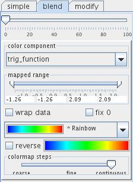

|
|
|
PRESENTATION PANEL
In this section most common options for the visual presentation of geometry objects are described. Specific, module dependent options are explained in the particular module entry.
The user can switch between two levels of presentation options - simple GUI and expert GUI - which can be used depending on skills and expertise.
EXPERT GUI
Content Options
In the content panel the user adjusts representation options for 3D regular field data.
The upper drop down list sets up the representation of the field grid as no grid, outline, point grid or line grid:
In case of point and line grid a second drop down list defines the grid density as coarse, fine, very fine.
By default external edges are outlined.
Press the color button in order to change the color of the outline. Pressing thebutton a color panel is raised and with a next mouse click the user can choose the color.
The show extern faces check box menu defines which faces are to be shown by switching the appropriate box on. By default the extern faces are not shown.
The color extern faces radio box menu defines the coloring of extern faces. By default the slice option is on. In this case the face is colored by its values. For avg the average value and for max the maximum value in a line perpendicular to the face is used.
Cell Set Options
The cell set panel appears in the case of irregular field data. In the text field all available cell sets are listed.
The add to indicate pick drop down menu lists all possible pick forms: nothing, box, lines surface which appear after left mouse click on a certain cell set in the viewer window indicating the picked cell set. At the same time the picked cell set name is highlighted in the text field.
Datamap Options
In the case of irregular data a radio button menu decides whether to color the geometry object according to field node values or cell numbers, if available.
cmap tab
The color component drop down list determines the component from the input field used to color the output geometry object. By default the first component is used. null uses gray shade.
The mapped range slider allows the user to change the value range onto which the colormap is projected. Color component values below slider minimum or above slider maximum are colored by minimum or maximum colormap value, respectively unless the option wrap data is choosen. If wrap data is on color map is periodicallymapped onto the range.
By default the whole color component range is used.
If fix 0 option is on the mapped range is extended to become symmetric with respect to 0 in such a way that it contains the previous range.
The color map drop down list enables the user to choose between several predefined color maps:
The default color map is Rainbow.
Bicolor and tricolor maps allow the user to build his or her own colormap by assigning two or three colors, respectively. Choosing bi- or tricolor maps there appear two or three color sliders below the drop down list. Mouse click on the slider raises a color panel from which the user can chose the desired color by a next mouse click. Change brightness by mouse dragging the slider into the left or right.
In all other cases the user can reverse the maps by choosing the reverse check box. By default it is off.
The colormap steps slider adjusts the quality of interpolation between two fixed colors ranging from coarse (step function with few values) over fine (step function with tens values) to continuous (continuous function). Default quality is continuous.
If color component is null instead of colormap drop down list, reverse check box and colormap steps slider there appears a color slider for choosing color and brightness as described above.
simple tab
Select the show legend check box to show the color legend in the viewer window.
Press the button on the right hand side of the show legend check box in order to choose left, bottom, right or top position of the legend.
Below the check box choose font size of text and numbers in the font text box. Define their color by raising the color panel via mouse click onto the color slider and choosing the color by a next mouse click. Drag the mouse on the color slider into left/right in order to change brightness.
The length/location and width/location slider determine length/vertical position and width/horizontal position of the legend.
blend tab

Color blending mixes color values of two components linearly to produce a third color using the formula:
colorOfOriginalColorComponent*(100 - scale)/100 + colorOfBlendColorComponent*scale/100
This option can be useful to show a kind of dependence between two components.
The scale slider defines the blend rate. By default the rate is zero.
The color component drop down list determines the blending component from within the input field components. By default the first component is used.
The mapped range slider allows the user to change the value range onto which the colormap of the blending component is projected. Color component values below slider minimum or above slider maximum are colored by minimum or maximum colormap value, respectively, unless the option wrap data is choosen. By default the whole color component range is used.
If fix 0 option is on the mapped range is extended to become symmetric with respect to 0 in such a way that it contains the previous range.
The color map drop down list enables the user to choose between several predefined color maps, as indicated in the description of the cmap tab.
modify tab
Another way of modifying color is combining the original color map with saturation/brightness depending on the value of a choosen field component. The higher the value of the saturation/brightness component the more saturated/brighter is the color of the geometry object. Combining two different components their data ranges are mapped one onto the other.
In a radio button list the user can choose between saturation and brightness.
A drop down list determines the modification component. By default the first component is used.
By dragging the saturation/brightness slider the user can change the minimum saturation/brightness used for modification.
The data range slider changes the value range of the saturation/brightness component. Values below slider minimum or above slider maximum are given minimum or maximum saturation/brightness.
rgb tab
Choose rgb tab in order to choose RGB color map. The user defines red, green and blue color component in three drop down menus.
By dragging the brightness slider the user can change the minimum brightness used for the component.
The data range slider changes the value range of the color component. Values below slider minimum or above slider maximum are given the color of the minimum or maximum value.
texture tab
In order to map texture onto a geometry object read in a texture image/colormap by pressing the read button and selecting a file in the file browser or typing the file name into the text input field on the right hand side of the button. The image/colormap can be flipped using flip x and flip y option in the check box menu.
The u component and v component menus define the mapping by choosing u and v components from the drop down lists. The mapped range sliders define the value range onto which the texture is mapped. Values below slider minimum or above slider maximum are colored by minimum or maximum value, respectively, unless the wrap option is choosen. By default the whole component range is used.
transp tab
The Transparency component drop down list defines the transparency of the output geometry object by mapping transparency onto the range of the choosen component. By default the first component in the list is used.
The mapped data range slider allows the user to cut/extend the range of the transparency component. For values below or above the range the minimum or maximum range value is used, respectively. By default the whole range is used.
The transparency map defines opacity at the y-axis dependently on the transparency component value on the x-axis. The red colored opacity function is editable by dragging mouse button on the transparency map field: left mouse button for free drawing, Shift+left mouse button for drawing a straight line, right mouse button for smoothing.
The effective opacity value is represented by the gray colored line which is proportional to the red line with a factor between 0 and 1 to be choosen dragging the y-slider. The x-slider allows to cut the value range from below by setting effecitve opacity equal to zero for values below the minimum value. The bar below the transparency map illustrates choosen values for transparency and color.
In the background of the transparency map the histogram of transparency component values is presented.
Finally, the user can choose between several predefined transparency maps.
Display Options

Depending on the type of the mapped field particular geometrical elements of the output geometry object can be shown by switching on/off appropriate checkboxes:
surfaces tab
The shading drop down list allows to choose the model of surface shading as smooth, flat, unshaded or background:
The lighted backside checkbox allows to switch on light from the backside of the surface. By default the checkbox is on.
The faces multistate button allows to switch between one of three options:
The flip sides button changes surface orientation.
If pull to the front of the scene checkbox is on the geometry object is on the top of the scene. By default this option is off.
The diffuse color slider allows to choose a color by clicking at the slider and chosing a color from the raised color panel and to change brightness by dragging the slider into the left/right.
The transparency slider adjusts the transparency of the geometry object from opaque on the left to transparent to the right side of the slider.
The shininess parameter determines the visual appearance of surfaces.
points and lines tab
The line/point width slider changes line width an point size. If checkbox on the right hand side is on the user is able to change minimum, maximum and current value using text input fields.
The feature angle slider defines the minimum angle between the normals of two neighboring triangles in order to draw their common edge. For angles below this value edges ar not drawn. This option works in case of irregular fields.
If the checkbox on right hand side is on the user is able to change minimum, maximum and current value typing them into the text fields.
The line style drop down list allows to choose between solid, dashed, dotted, dashdot line style. The default style is solid.
The darken line check box ???
Transform options
The user can carry out several object transformations:
by using the wheels or typing values into the text fields on the right hand side of the wheels. Clicking on the buttons on the right most side cancels this particular transformation.
Push the reset/inherit button to withdraw all transformations.